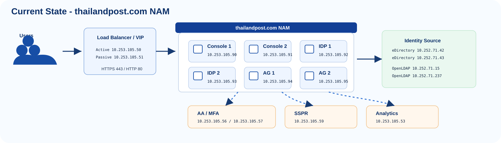
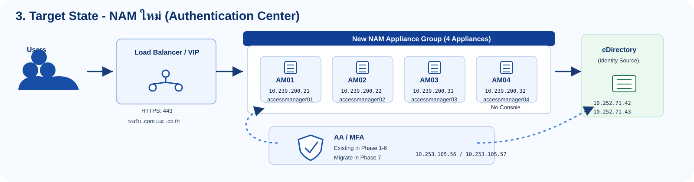
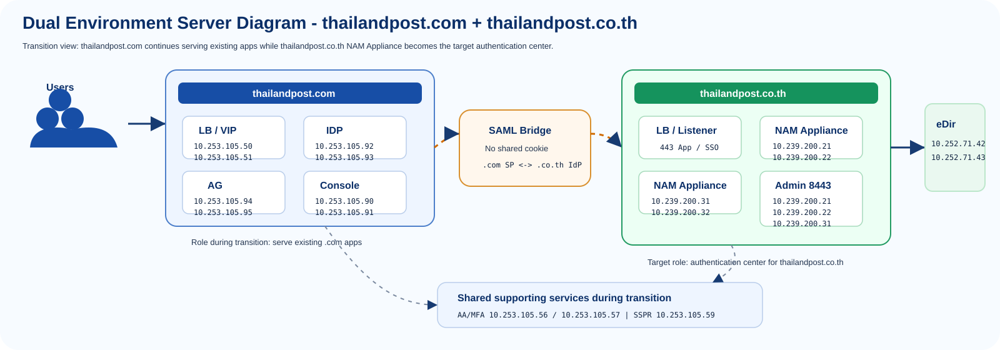
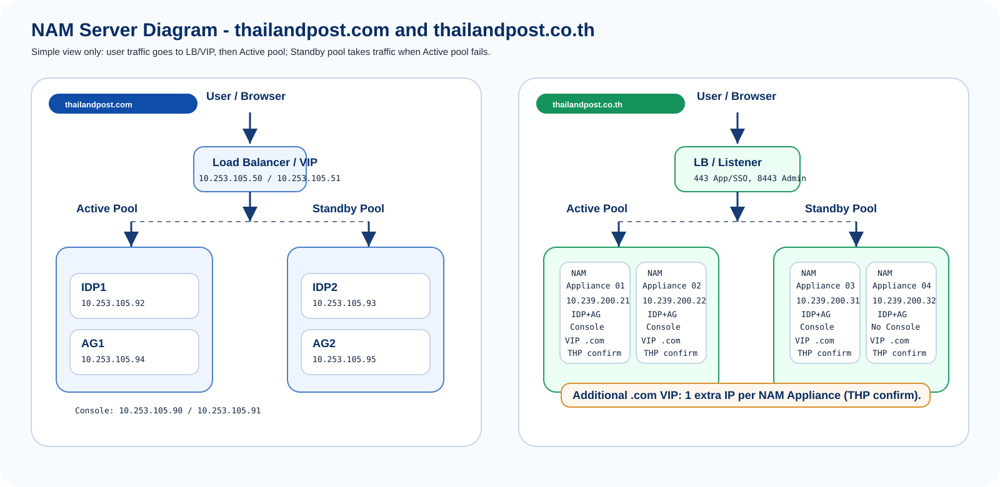
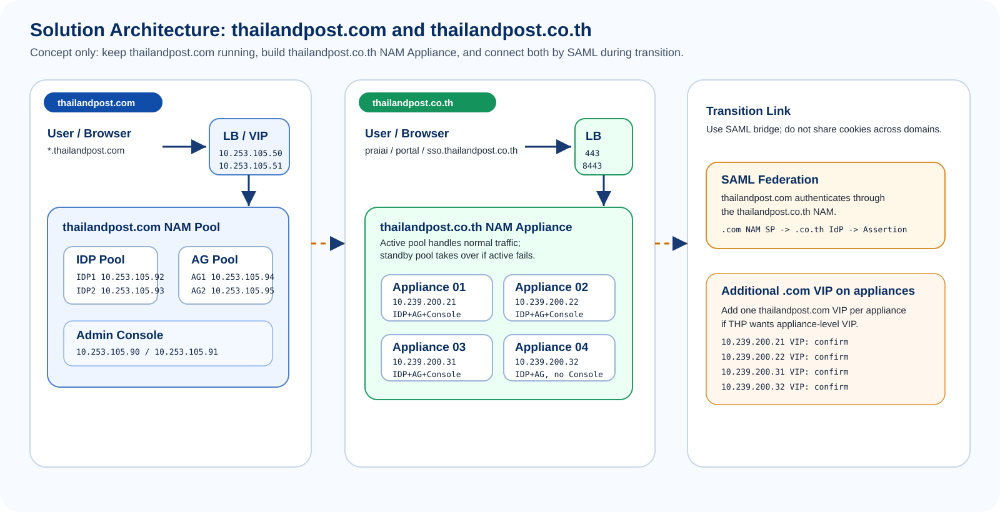
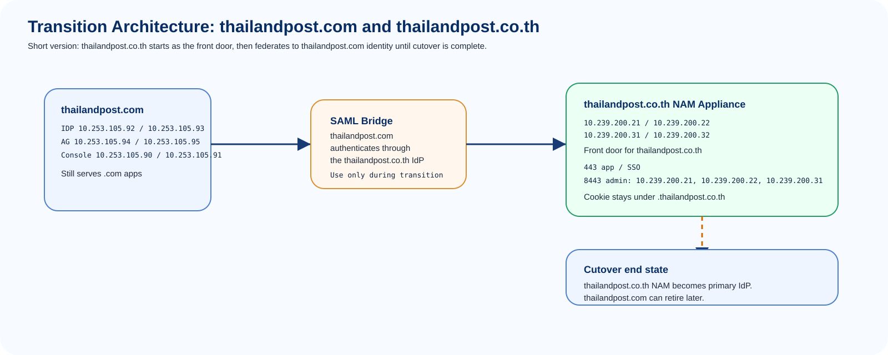

Current State Server Diagram
thailandpost.com
เอกสารนี้นำเสนอแนวทางปรับระบบ NetIQ Access Manager เพื่อรองรับการย้ายบริการจาก thailandpost.com ไปยัง thailandpost.co.th โดยแสดงภาพรวม architecture, server overview, SSO transition flow และรายการข้อมูลที่ต้องยืนยันร่วมกับ THP ก่อนดำเนินการจริง
นำเสนอแนวทางด้าน architecture และแผนดำเนินงานสำหรับการย้ายบริการไปยัง thailandpost.co.th
นำเสนอ target architecture สำหรับระบบ SSO / NAM เพื่อรองรับบริการภายใต้ thailandpost.co.th
แสดงแนวทางให้ระบบ thailandpost.com และ thailandpost.co.th ทำงานร่วมกันระหว่างการย้ายบริการ
สรุปขั้นตอน implement, test, cutover และข้อมูลที่ต้องยืนยันร่วมกับ THP ก่อนดำเนินการ production
สรุปรายการ component และ IP address ที่ใช้เป็น baseline สำหรับการออกแบบและการหารือร่วมกับ THP
ระบบปัจจุบันที่ยังรองรับบริการระหว่าง migration
NAM Appliance สำหรับ target environment ของ thailandpost.co.th
ภาพรวมการเปลี่ยนผ่านจาก thailandpost.com ไปยัง thailandpost.co.th โดยแยกข้อมูลที่ต้องยืนยันด้าน DNS, LB และ network policy
.thailandpost.co.th ไม่แชร์ cookie ข้าม root domain กับ .com
ชุดไดอะแกรมสำหรับอธิบาย current state, target state, dual environment และ SSO transition flow ในการประชุม









แนวทางหลักคือใช้ federation ระหว่างระบบเดิมและระบบใหม่ โดยไม่ใช้การแชร์ cookie ข้าม root domain
ลำดับงานที่เสนอสำหรับการเตรียมระบบ ทดสอบ transition และดำเนินการ cutover ไปยัง thailandpost.co.th
| Phase | งานหลัก | ผลลัพธ์ที่ต้องได้ | สิ่งที่ต้องตรวจ |
|---|---|---|---|
| Phase 0 เตรียมข้อมูล |
ยืนยัน DNS, LB Listener, VIP, Port Mapping, certificate และ firewall route | รายการค่าที่ THP ยืนยันพร้อมนำไปตั้งค่า | DNS, route, certificate, health check, admin access |
| Phase 1 ตั้งระบบใหม่ |
ตั้งค่า NAM Appliance IP 10.239.200.21, 10.239.200.22, 10.239.200.31 และ 10.239.200.32 แล้วกำหนด service สำหรับ thailandpost.co.th |
ระบบใหม่พร้อมรับ UAT | 443, 8443, node health, cookie domain, admin console เฉพาะ IP 10.239.200.21, 10.239.200.22 และ 10.239.200.31 |
| Phase 2 เชื่อม SSO |
ตั้ง federation / SAML ระหว่างระบบเดิมและระบบใหม่ตาม configuration จริง | ผู้ใช้สามารถใช้งาน flow SSO ระหว่างโดเมนได้ตามแผน migration | SAML metadata, NameID, attribute, certificate, logout, timeout |
| Phase 3 Cutover |
ย้ายบริการไป thailandpost.co.th และทยอย retire หรือ redirect บริการ thailandpost.com |
บริการหลักใช้งานผ่านโดเมนใหม่ | redirect loop, bookmark, monitoring, audit, user support |
รายการข้อมูลด้าน network, DNS, security และ SSO configuration ที่ต้องยืนยันก่อนเริ่ม implementation
thailandpost.co.th.thailandpost.co.th10.239.200.21, 10.239.200.22, 10.239.200.31thailandpost.com